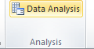

Objectives
This lab will focus on how to effectively summarise data quantitatively and perform some basic analyses for useful managerial information and insight. You will also cover measures of association and the use of histograms, box plots and scatter plots.
Descriptive Statistics
The Excel file - facebook survey provides data from a sample of students abou their Facebook habits. The data include categorical variables for gender and number of view/day, and numerical variables for the number of hours spent online/week and their estimated number of friends.
We might want to get a "big picture" view of what the data tells us. For example we might want to determine what is the typical number of friends, if any differences exist by gender, or how the number of views/day might be related to the number of friends.
Statistical measures provide an effective and efficient way of obtaining meaningful information from data. Descriptive statistics refers to a collection of quantitative measures and ways of describing data. This includes measures of central tendancy (mean, median, mode, proportion), measures of dispersion (range, variance, standard deviation), and frequency distributions and histograms.
Excel provides statistical functions as well as an analysis toolpak for more complex computations.
Some of the functions include:
- AVERAGE(data range)
- MEDIAN(data range)
- MODE.SNGL(data range)
- MODE.MULT(data range)
- VAR.S(data range)
- VAR.P(data range)
- STDEV.S(data range)
- STDEV.P(data range)
Frequency Distributions, Histograms
A frequency distribution is a table that shows the number of observations in each of several nonoverlapping groups. We may construct frequency distributions for both categoricl and numerical data.
Categorical Data
Categorical variables naturally define the groups in a frequency distribution; we need only count the number of ovservations that appear in each category. For the Facebook survey data for example, we may count the number of students who access Facebook 1-5 times, 6-10 times, and so on, using the Excel COUNTIF function.
For instance to count the number of students who view facebook 1-5 times a day, use the function
=COUNTIF($C$4:$C$36,"1-5")
A frequency distribution for this categorical variable is shown below.
Write the necessary COUNTIF formulas to present the data as above.
You can then construct a column chart to represent the frequencies.

You can also express the freqencies as a fraction or proportion of the total; this is called a relative frequency distribution as below:
Thus the relative frequency of 1-5 views/day is calculated at 9/33=0.273. The sum of the relative frequencies must total 1.0
Descriptive Statistics cont'd
Numerical Data
For numerical data that consist of a small number of discrete values, we may construct a frequency distribution similar to the way it was done for categorical data, that is simply count the frequencies of each discrete value. For example, in the facebook data, all the numbers of hours online/week are whole numbers between 2 and 15.
Construct a frequency table for the hours online per week using the COUNTIF function as before.
Create a column chart for the frequency values.
A graphical depiction of a frequency distribution for numerical data in the form of a column chart is called a histogram. Frequency distributions and histograms can be created using the analysis toolpak in Excel.You should have the analysis toolpak loaded into Excel. To check, go to the File tab in Excel, choose Options, and then Add-Ins, in the Manage box select Excel Add-Ins, Click Go. In the Add-Ins available box select Analysis Toolpak check box and click OK.
For numerical data that have many different discrete values with little repetition or are continuous, a frequeny distribution requires that we define groups (called bins), by specifying the number of groups, the width of each group, and the upper and lower limits of each group. It is important to remember that the groups may not overlap so that each value is counted in exacltly one group.
Add a column to the Facebook data that contains the bin ranges for Friends. Using these values, we are placing each value of Friends into groups from 0 to 50, more than 50 and up to 100, more than 100 up to 150 and so on.

Next click on the Data tab in Excel you should see the Data Analysis button.

Choose Histogram, select the range of values to be used, in this case it is the values in the Friends column (E4:E36). Choose the Bin values to be the new values you entered for the bin ranges (F4:F13). Make sure you check the Chart output box.

A histogram with bin range and frequency values will be generated in a new sheet.
The histogram shows that we have 5 occurences with below or equal to 50 friends, nine greater than 50 and less than or equal to 100 and so on. The histogram shows that fewer students have large numbers of friends and that most have 200 or less.
As previously done we can add a relative frequency column so as to add more context to the values you are analysing.
We can also sum all the relative frequencies at or below each upper limit, this is called the cumulative relative frequency. The cumulative relative frequency represents the proportion of the total sample that falls at or below the upper limit value.For example we can see that 0.697 or 70% of students have 200 or less friends on facebook.

Note that as relative frequenies must be between 0 and 1 and must add up to 1, the cumulative relative frequency for the last group must be equal to 1.
Next you can create a chart for the cumulative relative frequency, called an ogive. From this chart you can easily estimate the proportion of observations that falls below a certain value.

Exercise:
Construct frequency distributions and histograms for the numerical data in the excel file cell-phone.xls. Also, compute the relative frequencies and cumulative relative frequencies. Plot the cumulative relative frequenices on a line chart.
Measures of Association
Two variables have a strong statistical relationship with one another if they appear to move together. We see examples on a daily basis; for instance, attendance at baseball games is often closely related to the win percentage of the team, and ice cream sales likely have a strong relationship with daily temperature.
When two variables appear to be related, you might suspect a cause-and-effect relationship, sometimes however, statistical relationships exist even though a change in one variable is not caused by a change in the other. For example the New York Times reported a strong statistical relationship between the golf handicaps of corporate CEOs and their companies stock market performance over three years. CEOs who were better than average golfers were likely to deliver above average returns to shareholders. Clearly, the ability to golf would not cause better business performance. One must be cautious in drawing inferences about causal relationships based soley on statistical relationships.
However the relationship between variables is extremely important in making good business decisions.
The Excel file Colleges and Universities contains data from 49 top liberal arts and research universities across the United States. Several questions might be asked about statistical relationships among these variables:
- Does a higher percentage of students in the top 10% or their high school class suggest a higher graduation rate?
- Is acceptance rate related to the amount spent per student?
- Do schools with lower acceptance rates tend to accept students with higher SAT scores?
These questions can be addressed by computing the correlation between the variables.
Correlation is a measure of a linear relationship between two variables, X and Y, and is measured by the correlation coefficient. The correlation coefficient is between -1 and +1 A correlation of 0 indicates that two variables have no linear relationship to each other. Thus, if one changes, we cannot resonably predict what the other variable might do. A positive correlation coefficient indicates a linear relationship for which one variable increases as the other also increases. A negative correlation coefficient indicates a linear relationship for one variable that increases while the other decreases.
Excel's CORREL function computes the correlation coefficient of two data arrays, and the data analysis correlation tool computes correlation coefficients for more than two arrays.
The correlation matrix for the data in Colleges and Universities is shown below:

None of the correlations are very high; however, we see a moderate positive correlation between the graduate rate and SAT score (0.56414), this indicates that schools with higher SATs have higher graduation rates. We also see a negative correlation between acceptance rate and graduation rate (-0.55037751), indicating that schools with lower acceptance rates have higher graduation rates.
Open the major league basball and calculate the correlations between some pairs of numerical variables. Do the results make sense?
Visual display of statistical measures
Box Plots
Box plots graphically display five key statistics of a data set - the minimum, first quartile, median, third quartile, and the maximum. They are very useful in identifying the sahpe of a distribution and outliers in the data. Box plots can be created in Excel using PHStat.
Download PHStat2 for your own laptops if you havent already done so.
Using the facebook data, choose PHStat menu in the add-Ins tab and choose descriptive statistics, then boxplot, select the data for facebook friends including the column heading. Check single group variable, enter a title in the output options and tick five number summary box. Click Ok. A new worksheet contains the five numbers (minimum, first quartile, median, third quartile and maximum) and another worksheet contains the box plot diagram.
The "whiskers" on either side of the box represent the maximum and minimum values, and the box encloses the first and third quartiles with a line inside the box representing the median. Very long whiskers indicate outliers in the data. Since the box is off centre to the left and the median line is off centre within the box, the distribution appears to be positively skewed (this was verified by the CS calculated earlier).
Dot-Scale Diagrams
A dot-scale diagram is another visual display that shows a histogram of data values as dots corresponding to individual data points, along with the mean, median, first and third quartiles, and +- 1, 2, and 3 standard deviation ranges from the mean.
The Facebook friends data can be used to generate a dot-scale using the PHStat descriptive statistics menu again.

Dot-scale diagrams provide a better visual picture and understanding of the data than box plot.
Construct a box plot and dot-scale for the data in vacation survey
Outliers
Earlier we had noted that the mean and range are sensitive to outliers in the data. Outliers can make a significant difference in the results we obtain from statistical analyses. An important statistical question is how to identify them. The first thing to do from a practical perspective is to check the data for possible errors, such as a misplaced decimal point.
Box plots and dot-scale diagrams can help identify possible outliers visually. The question is what to do with them. They should not be blindly eliminated unless there is a legitimate reason for doing so. Statisticians often suggest that analyses should be run with and without the outliers so that the results can be examined critically.
Exercises
A community health status survey obtained the following demographic information from the respondents:

Compute the relative frequency and cumulatvie relative frequency of the age groups.

The Excel file MBA Student Survey provides demographic data and and responses to questions on the number of nights out per week and study hours per week for a group of MBA students. Construct frequency distributions and compute the relative frequencies for the categorical variables of gender, international students status, and undergraduate concentration. What conclusions can you draw?
Construct a fequency distribution and histogram for driving acuracy(%) in the Excel file GolfingStatistics using the Excel Histogram tool and appropriate bin ranges. find the relative frequencies and cumulative relative frequencies for each bin.
When the Histogram is created in the sepearate sheet, add a relative frequency and cumulative frequency column as stated above. Add another series by right clicking on the histogram, and choosing Select Data. Click Add, name the series cumulative, choose the cumulative column of data you constructed. Next change the series from a bar to a line on the chart. Do this by right clicking on the cumulative series and choose Change Series Chart Type, choose Line. Next right click the series and choose Format Data Series, Change the axes to a secondary Axes.
Your chart and data should look like this:
An engineering contractor estimates the drilling depth of piles, the actual drill footage of each is also recorded. Using the pile foundation file compute the correlation coefficient between the estimated and actual pile lengths. What does this tell you?
The file house sales provides information on selling price, lot cost, type of home and region (m=midwest, s=south). Construct a scattor chart showing the relationship between sales price and lot cost. Does there appear to be a linear relationship? Compute the correlation coefficient. Construct scatter charts for the relationship between sales price and lot cost for each region. Do linear relationships exist? Compute the correlation coefficients. Construct scatter charts for the relationship between sales price and lot cost for each type of house. Do linear relationships exist? Compute the correlation coefficients.